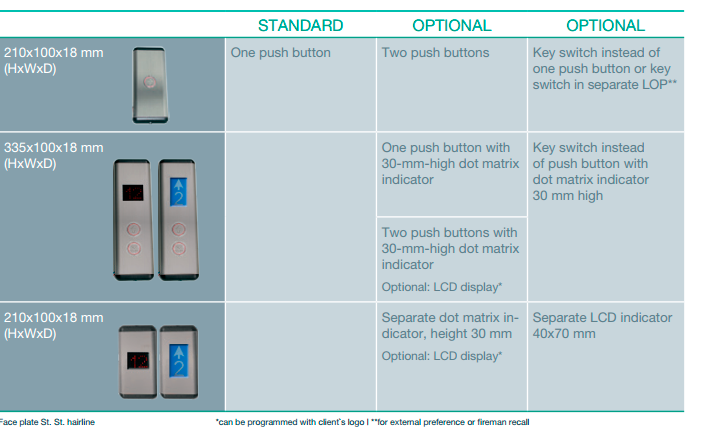

ZIRCON название модели
Здесь краткое описание модели.ПКП «Укрсхидлифт» ООО – лидирующая компания на рынке лифтового хозяйства г. Харькова, Харьковской области и одно из ведущих в Украине. Предприятие постоянно принимает активное участие в международных выставках и конференциях, тесно сотрудничает с «ОТИС»; «LM» (Германия); Евроформат (Украина); «Монитор-Италия»; «Secor» (Италия); Могилёвлифтмаш (Белоруссия); «Щербинский лифтостроительный завод» (Россия); «Родос» (Украина), что позволяет внедрять новейшие технологии и мировой опыт лифтовых организаций.
Задать вопросЗдесь описание модели.Пассажирские лифты выпускаются грузоподъемностью 400, 500, 630 и 1000 кг со скоростью движения до 2 м/с. Они предназначены для установки в жилых домах, общественных и административных зданиях, гостиницах, банках и офисах. Изготавливаются с верхним и нижним расположением машинного помещения, а также отдельные модели не имеющие машинного помещения. Возможно изготовление лифтов в сейсмическом исполнении.
